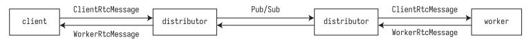
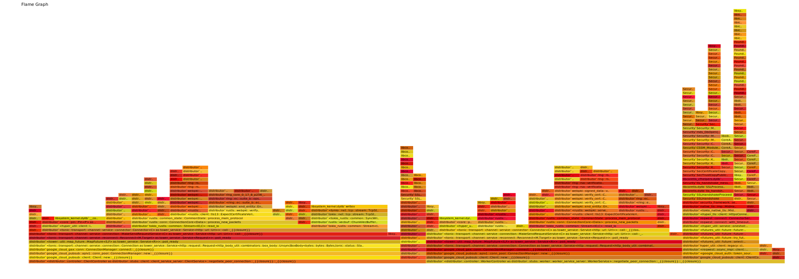
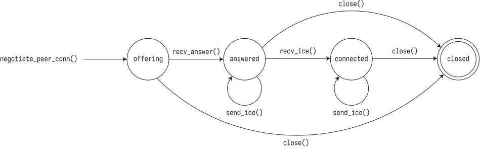

2024-12-26
As part of a larger Rust project, I'm implementing WebRTC to establish peer-to-peer connections in a mesh-like fashion. My main goal is to add a state machine and replace some of the components that are currently slowing down the program.
To give context, WebRTC is an protocol and API for two peers to negotiate a bi-directional secure connection and an API to let developers use the protocol in their preferred language. It additionally serves as an abstraction for many internet protocols (e.g. SCTP, STUN/TURN, ICE, SDP) that would have to be historically hand-rolled for peer connections. In this post, I won't go into the nitty gritty of how WebRTC works under the hood—fortunately, we can implement WebRTC without knowing all the details 100% (I highly recommend reading through WebRTC for the Curious for an amazing deep dive into these details).
Our goal is to establish a peer-to-peer connection between a client and a worker with a data channel, which allows to send arbitrary bytes across the network connection. To negotiate the WebRTC connection between the client and worker, we need a signaling server, which simply means a relayer that will forward all client messages to the worker, and all worker messages to the client.
Assume the client knows the ID for the worker it is attempting to connect to. Defining the client as the "impolite peer" (i.e. the one that always starts the negotiation), we can negotiate using the following steps (summarized version of the WebRTC for the Curious book mentioned earlier):
Client generates an offer. This offer consists of a local Session Description Protocol (SDP), which contains all the data formats (e.g. audio OPUS, video VP8) that this peer is willing to exchange. The client then sends this offer to the worker through the signaling server.
At this point, the client has an RTCPeerConnection object, with
its local description set to the offer SDP.
The worker receives the client's offer, and sets its RTCPeerConnection
object's remote description to the client's SDP. Additionally, it generates an answer, which
is another SDP that may exclude some of the data formats that the offer SDP had. This ensures
both peers are aware of the data formats they are willing to exchange.
Similar to the client, the worker's RTCPeerConnection both
local and remote descriptions correctly set.
When the client receives the answer, it sets its remote description accordingly. At this point, both peers can send each other generated ICE candidates, which represent possible addresses that this peer is available on. This process is necessary because either peer could be behind private IP addresses in separate subnets, making traditional HTTP connections impossible (routers would not know which host to send packets to).
WebRTC instead uses a network address translation (NAT) mapping, which will map
private IP addresses like 192.168.0.1:7000
to public ones like 5.0.0.1:7000 (essentially automated port forwarding).
All the automation is packaged into the STUN/TURN/ICE protocols.
As both the client and the worker receive ICE candidates from each other, they will use ICE ping packets to establish connectivity. Once the connection is established, we can treat this as any normal socket and start sending data.
In the background, the client and worker continue sending ICE candidates, and if a better Candidate Pair is found, the underlying connection is moved for the rest of the session under the hood.
Here is the current design for modeling this problem in a simple way:
A client and worker attempt to establish a WebRTC connection.
A distributor acts as a signaling server, with bidirectional gRPC stream connections with both the client and the worker. An important constraint here is that when the distributor is deployed on e.g. Google Cloud Run, there may be multiple instances of the distributor, so we require message passing between distributor instances to be a correct signaling server implementation.
With this constraint, the diagram turns into:

For the initial system, we have been using Google Pub/Sub for inter-instance
communication. Here is an example of RtcMessage protobuf
definitions for the worker (client definitions are very similar):
enum RtcEvent {
OFFER = 0;
ANSWER = 1;
ACCEPT_ANSWER = 2;
ICE_CANDIDATE = 3;
LOCAL_ICE_CANDIDATE = 4;
BLANK = 5;
PING = 6;
}
message WorkerRtcMessage {
int64 worker_machine_id = 1;
RtcEvent event = 2;
bytes message = 3;
}
service WorkerService {
rpc NegotiatePeerConnection(stream WorkerRtcMessage) returns (stream WorkerRtcMessage);
}
For simplicity, I'll spare the details of the full implementation, since the eventual goal is refactor the original code into a state machine while replacing Google Pub/Sub. Here's the rationale. With the current code, establishing the peer connection takes 9-10 seconds on average.
Using flamegraph, I tried profiling the distributor code to
find the critical section (or perhaps more accurately, the blocking functions).
The image is annoyingly wide, so open in new tab to see it in its full glory:
Recall that the important sections are the width of each cell, and the height, which denotes the stack depth. We really care about this section, which is located near the middle right parts of the flamegraph:
We start at the stack depth of the negotiate_peer_connection
gRPC function, and can easily see that the Pub/Sub parts of the code are easily
the largest bottleneck compared to the rest of the code. This finding motivates
finding a replacement for Pub/Sub. In hindsight, this makes sense given that
we create a new subscription for every client, while Pub/Sub subscriptions are meant
to be long-lived (related StackOverflow).
While replacing Pub/Sub, we can additionally use this as an excuse to try creating
a WebRTC state machine as an interesting learning exercise.
A really interesting read for me has been Will Crichton's Type-Driven API Design in Rust, where he uses typestates ("encoding a state machine's state into the type system") to check state validity at compile time. While this is great concept, since our data comes in during runtime and is dynamic across multiple processes/machines, we can't quite have the same guarantees. However, we can take inspiration from typestate programs and write an FSM with fallible transitions. Let's take an example and see how we can implement this.
For the client, we can create a state diagram for the client through the negotiation process:

When negotiate_peer_connection() is called in the client, it creates
a PeerConnection with a generated offer SDP, which is sent to the
distributor. Upon receiving an answer, it enters the answered state,
where ICE candidates are sent and received. When the appropriate ICE candidates are exchanged,
we progress to the connected state. At any point, close()
can be called to reach the final state.
Our code implementation won't match one-to-one with this diagram, since the state transitions
may be caused by background ICE candidate exchanges happening in the webrtc
crate, but we'll try our best.
Let's start with creating a few abstractions so we don't need to deal with the distributor for now.
We create a Uid newtype, which is thoroughly defined in the original code, but we simply need a tuple
struct around i64 for now. Additionally, since we discriminate between ClientRtcMessages and
WorkerRtcMessages, we'll make a trait that encapsulates the shared functionality. The final piece
of small boilerplate is a SignalingChannel, which simply represents bidirectional communication
with the distributor. The inner AsyncStream code is abstracted away into a Sender and Receiver,
which we'll use in the state machine.
#[derive(Clone)]
struct Uid(i64);
pub trait RtcMessage {
type Id;
fn new(id: Self::Id, event: i32, message: Vec<u8>) -> Self;
}
impl RtcMessage for ClientRtcMessage {
type Id = i64;
fn new(id: Self::Id, event: i32, message: Vec<u8>) -> Self {
Self {
worker_machine_id: id,
event,
message,
}
}
}
struct SignalingChannel<Message>
where
Message: RtcMessage<Id = i64> + Send + Sync,
{
sender: mpsc::Sender<Message>,
receiver: mpsc::Receiver<Message>,
}
impl SignalingChannel<ClientRtcMessage> {
fn new(
sender: mpsc::Sender<ClientRtcMessage>,
receiver: mpsc::Receiver<ClientRtcMessage>,
) -> Self {
Self { sender, receiver }
}
async fn send(&self, message: ClientRtcMessage) -> Result<()> {
self.sender.send(message).await?;
Ok(())
}
async fn recv(&mut self) -> Option<ClientRtcMessage> {
self.receiver.recv().await
}
}
We have the pieces to make our general PeerConnection object now.
Since we want easy access to this, we'll wrap the inner pieces in Arcs for now
(if this ends up being a big bottleneck in the future, we can redesign if needed).
#[derive(Clone)]
pub struct PeerConnection {
pub rtc_connection: Arc<RTCPeerConnection>,
pub data_channel: Option<Arc<RTCDataChannel>>,
pub pending_candidates: Arc<Mutex<Vec<RTCIceCandidate>>>, // Local candidates that have not been sent to the remote peer yet
}
Following the webrtc crate's example, we can create default
PeerConnections (this section is largely webrtc boilerplate,
can be skipped if needed; I'm simply including for completeness):
impl PeerConnection {
async fn default() -> Result<Self> {
let config = RTCConfiguration {
ice_servers: vec![RTCIceServer {
urls: vec!["stun:stun.l.google.com:19302".to_owned()],
..Default::default()
}],
..Default::default()
};
let mut media_engine = MediaEngine::default();
media_engine.register_default_codecs()?;
let mut registry = Registry::new();
registry = register_default_interceptors(registry, &mut media_engine)?;
let api = APIBuilder::new()
.with_media_engine(media_engine)
.with_interceptor_registry(registry)
.build();
let peer_connection = Arc::new(api.new_peer_connection(config).await?);
let peer_connection = PeerConnection {
rtc_connection: peer_connection,
data_channel: None,
pending_candidates: Arc::new(Mutex::new(Vec::new())),
};
Ok(peer_connection)
}
Next, in the client's case, we also want to add a data channel to the created PeerConnection and
create an offer SDP afterwards:
/// Creates a data channel with open and message listeners.
/// Must be created before creating an offer as part of WebRTC protocol.
async fn create_data_channel(&mut self) -> Result<()> {
let data_channel = self
.rtc_connection
.create_data_channel("data", None)
.await?;
data_channel.clone().on_open(Box::new(move || {
println!("Client: Data channel opened");
Box::pin(async move {})
}));
data_channel.on_message(Box::new(move |msg| {
println!("Client: Received message: {:?}", msg);
Box::pin(async move {})
}));
self.data_channel.replace(data_channel);
Ok(())
}
async fn create_offer(&self) -> Result<RTCSessionDescription> {
let offer = self.rtc_connection.create_offer(None).await?;
self.rtc_connection
.set_local_description(offer.clone())
.await?;
Ok(offer)
}
Almost done with PeerConnection implementation—we just need
to add handlers when the RTC state changes (not to be confused with
the state machine we are yet to add!), when ICE candidates are locally
generated, and when a data channel between peers opens up.
fn start_state_change_handler(&self) -> Result<()> {
self.rtc_connection
.on_peer_connection_state_change(Box::new(move |s: RTCPeerConnectionState| {
println!("State change: {:?}", s);
Box::pin(async {})
}));
Ok(())
}
pub async fn start_ice_candidate_handler(&self) -> Result<()> {
todo!()
}
async fn start_data_channel_handler(mut self) {
self.rtc_connection
.on_data_channel(Box::new(move |d: Arc<RTCDataChannel>| {
println!("data channel opened!");
let data_channel = d.clone();
self.data_channel.replace(data_channel);
Box::pin(async {})
}));
}
}
Since the state machine is yet to be created, we're not 100% sure
what the local ICE candidate handler will look like. It needs to somehow
send ICE candidates to the distributor, but only when we are in the correct
states, so let's defer its implementation until we know future details.
Note that the data channel handler "consumes" self since we'll
replace the underlying memory through the Arc.
Cool! Now we can create a client-side PeerConnection object:
pub async fn client_peer_connection() -> Result<PeerConnection> {
let mut peer_connection = PeerConnection::default().await?;
peer_connection.create_data_channel().await?;
peer_connection.start_state_change_handler()?;
peer_connection
.start_ice_candidate_handler::<ClientRtcMessage>()
.await?;
peer_connection.clone().start_data_channel_handler().await;
Ok(peer_connection)
}
Finally, we can start building our WebRTC state machine! Let's start with defining our states and the machine itself.
struct Offering;
struct Answered;
struct Connected;
struct Closed;
pub struct ImpolitePeerConnectionState<State> {
inner: PeerConnection,
signaling_channel: SignalingChannel<ClientRtcMessage>,
_state: PhantomData<State>,
}
It might feel weird to add this PhantomData field in
the machine struct. If we remove the _state field, the compiler
complains that we never use the type parameter State. So we add
the extra field simply to appease the compiler.
Okay, great so far—we have some semblance of a state machine.
How do we get it started? Well, in the diagram we know we'll call
some kind of negotiate function. Let's start by defining
a standalone function for ImpolitePeerConnectionState<Offering>:
impl ImpolitePeerConnectionState<Offering> {
pub async fn negotiate(
peer_id: Uid,
signaling_channel: SignalingChannel<ClientRtcMessage>,
) -> Result<ImpolitePeerConnectionState<Offering>> {
let inner = client_peer_connection().await?;
let offer = inner.create_offer().await?;
let offer_payload = serde_json::to_string(&offer)?;
let message =
ClientRtcMessage::new(peer_id.0, RtcEvent::Offer as i32, offer_payload.into());
signaling_channel.send(message).await?;
Ok(ImpolitePeerConnectionState {
inner,
signaling_channel,
_state: PhantomData,
})
}
Here, we create our PeerConnection, and send the serialized offer SDP
to the distributor as a ClientRtcMessage. Super easy. The next step is to
add in the recv_answer() function. Here's where we run into our first issue:
we're going to be receiving RtcMessages asynchronously from the distributor.
So how do we enforce our typestate design? I believe this is where we break
away from having traditional typestate and instead err towards fallible transitions.
The other interesting part here is that our transition has the side effect of
sending all the "pending ICE candidates". If we generate any ICE candidates while
in the offering state, we store them until we reach a state that we can send them.
pub async fn to_answered(
self,
answer_payload: String,
) -> Result<ImpolitePeerConnectionState<Answered>> {
let answer: RTCSessionDescription = serde_json::from_str(&answer_payload)?;
self.inner
.rtc_connection
.set_remote_description(answer)
.await?;
let answered: ImpolitePeerConnectionState<Answered> = ImpolitePeerConnectionState {
id: self.id,
inner: self.inner,
signaling_channel: self.signaling_channel,
_state: PhantomData,
};
answered.send_all_pending_candidates().await?;
Ok(answered)
}
Let's allow the error to bubble up for now, and provide the correct error messages with the state of the program after. Finally, we can add a simple close function:
pub async fn to_closed(self) -> Result<ImpolitePeerConnectionState<Closed>> {
self.inner.rtc_connection.close().await?;
Ok(ImpolitePeerConnectionState {
id: self.id,
inner: self.inner,
signaling_channel: self.signaling_channel,
_state: PhantomData,
})
}
}
Let's keep going with the answered state. Here, we can either send
or receive ICE candidates. However, receiving an ICE candidate doesn't immediately
lead to a state transition. Rather, we'll transition to connected when
the data channel opens. The webrtc crate offers us handlers to capture
these events, so we'll have to work around this limitation of transitions.
impl ImpolitePeerConnectionState<Answered> {
pub async fn send_all_pending_candidates(&self) -> Result<()> {
let mut pending_candidates = self.inner.pending_candidates.lock().await;
for candidate in pending_candidates.iter() {
self.send_ice_candidate(candidate.clone()).await?;
}
pending_candidates.clear();
Ok(())
}
pub async fn send_ice_candidate(&self, candidate: RTCIceCandidate) -> Result<()> {
let candidate_payload = serde_json::to_string(&candidate)?;
let message = ClientRtcMessage::new(
self.id.0,
RtcEvent::IceCandidate as i32,
candidate_payload.into(),
);
self.signaling_channel.send(message).await?;
Ok(())
}
pub async fn recv_ice_candidate(&self, candidate_payload: String) -> Result<()> {
let candidate: RTCIceCandidateInit = RTCIceCandidateInit {
candidate: candidate_payload,
..Default::default()
};
self.inner
.rtc_connection
.add_ice_candidate(candidate)
.await?;
Ok(())
}
To transition to connected, we'll mandate that we have a data channel to pass in.
Finally, we have the same closed transition.
pub async fn to_connected(
mut self,
data_channel: Arc<RTCDataChannel>,
) -> Result<ImpolitePeerConnectionState<Connected>> {
self.inner.data_channel.replace(data_channel);
Ok(ImpolitePeerConnectionState {
id: self.id,
inner: self.inner.clone(),
signaling_channel: self.signaling_channel,
_state: PhantomData,
})
}
pub async fn to_closed(self) -> Result<ImpolitePeerConnectionState<Closed>> {
self.inner.rtc_connection.close().await?;
Ok(ImpolitePeerConnectionState {
id: self.id,
inner: self.inner,
signaling_channel: self.signaling_channel,
_state: PhantomData,
})
}
}
We left out one piece of the connected state in the negotiation
state diagram—we can now send and receive data through the
data channel! However, the high-level RTCDataChannel that we have
in our struct doesn't have an idiomatic API; rather, it enforces
us using on_message event handlers. We can either detach the
underlying DataChannel object and use the read/write API
or wrap the RTCDataChannel with our own DataChannel. For
educational reasons, let's try wrapping it.
pub struct DataChannel {
data_channel: Arc<RTCDataChannel>,
sender: mpsc::Sender<DataChannelMessage>,
receiver: Mutex<mpsc::Receiver<DataChannelMessage>>,
}
impl DataChannel {
pub fn new(data_channel: Arc<RTCDataChannel>) -> Self {
let (sender, receiver) = mpsc::channel(32);
let sender_c = sender.clone();
data_channel.on_message(Box::new(move |msg| {
let sender = sender_c.clone();
Box::pin(async move {
sender.send(msg).await.unwrap();
})
}));
Self {
data_channel,
sender,
receiver: receiver.into(),
}
}
pub async fn send(&self, data: Vec<u8>) -> Result<()> {
let data = Bytes::from(data);
self.data_channel.send(&data).await?;
Ok(())
}
pub async fn recv(&self) -> Option<Vec<u8>> {
self.receiver
.lock()
.await
.recv()
.await
.map(|m| m.data.to_vec())
}
}
Now we can use send and recv and treat the DataChannel like a normal
channel. All that's left is to replace all the RTCDataChannels
with DataChannels and add Arcs where necessary. Now we can implement
the connected state. We'll have the same functions for sending and
receiving ICE candidates, as well as for closing.
impl ImpolitePeerConnectionState<Connected> {
pub async fn send_data(&self, data: Vec<u8>) -> Result<()> {
self.inner
.data_channel
.as_ref()
.expect("data channel not created in connected state")
.send(data.into())
.await?;
Ok(())
}
pub async fn recv_data(&mut self) -> Option<Vec<u8>> {
self.inner.data_channel.as_ref().unwrap().recv().await
}
pub async fn send_ice_candidate(&self, candidate: RTCIceCandidate) -> Result<()> {
let candidate_payload = serde_json::to_string(&candidate)?;
let message = ClientRtcMessage::new(
self.id.0,
RtcEvent::IceCandidate as i32,
candidate_payload.into(),
);
self.signaling_channel.send(message).await?;
Ok(())
}
pub async fn recv_ice_candidate(&self, candidate_payload: String) -> Result<()> {
let candidate: RTCIceCandidateInit = RTCIceCandidateInit {
candidate: candidate_payload,
..Default::default()
};
self.inner
.rtc_connection
.add_ice_candidate(candidate)
.await?;
Ok(())
}
pub async fn to_closed(self) -> Result<ImpolitePeerConnectionState<Closed>> {
self.inner.rtc_connection.close().await?;
Ok(ImpolitePeerConnectionState {
id: self.id,
inner: self.inner,
signaling_channel: self.signaling_channel,
_state: PhantomData,
})
}
}
For completeness, we'll implement the to_closed for the
closed state as well, which will allow us to call this function
from any state without worry.
impl ImpolitePeerConnectionState<Closed> {
pub async fn to_closed(self) -> Result<ImpolitePeerConnectionState<Closed>> {
Ok(ImpolitePeerConnectionState {
id: self.id,
inner: self.inner,
signaling_channel: self.signaling_channel,
_state: PhantomData,
})
}
}
And we're (allegedly) done!